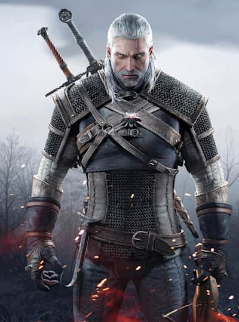

Geralt z Rivii
Geralt z Rivii – postać fikcyjna, wiedźmin, główny bohater cyklu powieści i opowiadań Andrzeja Sapkowskiego oraz opartych na nich seriali, gier komputerowych i komiksów.
Biografia
Geralt był dzieckiem druidki Visenny oraz (prawdopodobnie) wojownika o imieniu Korin (bohaterowie opowiadania Droga, z której się nie wraca) – uczynienie Korina ojcem Geralta nie było pomysłem Sapkowskiego, a twórcy komiksowej adaptacji. Niedługo po narodzinach został oddany wiedźminom z Kaer Morhen. Tam poddany został licznym mutacjom i przeżył Próbę Traw, zyskując nadludzkie zdolności fizyczne i psychiczne. Ponieważ lepiej od innych znosił zmiany związane z mutacjami, dokonywano na nim coraz bardziej niebezpiecznych procedur, wskutek których stracił cały pigment. Ze względu na bladą skórę i białe włosy zyskał przydomek „Biały Wilk”, w starszej mowie – „Gwynbleidd”.
Pomimo swojego przydomku, Geralt najprawdopodobniej nie pochodził z Rivii, lecz nauczył się rivskiego akcentu i został pasowany zgodnie ze swoim przydomkiem przez królową Rivii i Lyrii, Meve, za obronę mostu na Jarudze. Vesemir zachęcał młodych wiedźminów, żeby wybrali sobie przydomki, co miało sprawić, że będą postrzegani jako bardziej godni zaufania. Geralt pierwotnie chciał przedstawiać się jako Geralt Roger Eryk du Haute-Bellegarde, Vesemir wyperswadował mu jednak ten pomysł, twierdząc, że imię jest zbyt śmieszne i pretensjonalne. Ostatecznie zdecydował się na Geralta z Rivii. Wybranie sobie takiego przydomku miało mu też pomóc identyfikować się z jakimkolwiek miejscem.
Ostatecznie Geralt został wiedźminem i wyruszył w świat w poszukiwaniu kolejnych zleceń, jeżdżąc na klaczach, którym zawsze nadawał imię „Płotka”. Z czasem dorobił się przydomku „Rzeźnik z Blaviken”, kiedy w rzeczonej miejscowości zamordował Renfri i całą jej bandę. Podczas podróży poznał trubadura Jaskra, który z czasem został jego przyjacielem. Jakiś czas później, w miejscowości Rinde, spotkał czarodziejkę Yennefer z Vengerbergu, z którą splątał swoje przeznaczenie poprzez życzenie wypowiedziane dżinnowi – Yennefer ostatecznie zostaje jego partnerką.
(Czytaj dalej...) Lub (Czytaj więcej...)
Galeria
Ciri
Cirilla Fiona Elen Riannon, zdrobniale Ciri (zwana Jaskółką, w Starszej Mowie Zireael i Falką) – postać fikcyjna, jedna z bohaterek cyklu wiedźmińskiego Andrzeja Sapkowskiego. Księżniczka Cintry, córka Pavetty i Duny’ego z Erlenwaldu, wnuczka Calanthe, Dziecko Niespodzianka, Dziecko Przeznaczenia, reprezentantka Starszej Krwi, nosicielka genu Lary, Lwiątko z Cintry.
Biografia
Ciri to cintryjska księżniczka, córka Pavetty, a wnuczka Calanthe. Jej rodzice zginęli podczas sztormu, a raczej w momencie, gdy Vilgefortz chciał porwać statek z rodzicami Ciri na prośbę jej ojca, gdy była małym dzieckiem. Dzieciństwo spędziła w Cintrze i na Wyspach Skellige na dworze swojej babki.
Jest legendarnym Dzieckiem Niespodzianką, została przeznaczona wiedźminowi Geraltowi. Podczas oblężenia Cintry została uprowadzona przez nilfgaardzkiego rycerza Cahira. Udało się jej jednak uciec. Powojenna zawierucha doprowadza ją do tułaczki po krainie Sodden.
Ostatecznie Geralt i Ciri odnajdują się w chacie ubogiego kupca Yurgi i jego żony Złotolitki. Wiedźmin zabiera księżniczkę do Wiedźmińskiego Siedliszcza, Kaer Morhen, gdzie z pomocą Vesemira, Lamberta, Coëna i Eskela szkoli ją na wiedźminkę. Dziewczynka nie zostaje jednak poddana Próbie Traw, gdyż ujawnia się jej magiczny potencjał i zdolności do wieszczenia. To zmusza wiedźminów do zasięgnięcia porady czarodziejów. Jako że Geralt jest wtedy pokłócony z Yennefer, do Kaer Morhen zostaje sprowadzona inna znajoma czarodziejka, Triss Merigold. To ona potwierdza nietypowe zdolności Lwiątka i pomaga jej zapanować nad snami. Jednakże czując jak ogromną mocą włada Jaskółka, radzi by zwrócić się jednak o pomoc do Yennefer.
Chęć zapewnienia jej kontaktów z rówieśnikami, a także potrzeba zarobku Geralta prowadzi do oddania jej na wychowanie w świątyni Wielkiej Melitele w Ellander. Tam, zgodnie z radą Triss, rozpoczyna się magiczna edukacja Ciri pod okiem Yennefer, członkini Rady Czarodziejów. Mimo początkowej niechęci obu pań, po jakimś czasie wytwarza się między nimi bardzo silna więź emocjonalna. Łączy je nie tylko osoba wiedźmina, ale także magia i potrzeba posiadania matki (ze strony Ciri) oraz potrzeba posiadania dziecka (Yennefer). Z Ellander Ciri i czarodziejka udają się na zjazd czarodziejów na wyspę Thanedd. Po zjeździe, Ciri ma rozpocząć naukę w Szkole Magii Aretuza, do której niegdyś uczęszczała także Yennefer. W wyniku zbiegu okoliczności na Thanedd przybywa również Geralt z Jaskrem. Geralt godzi się wreszcie z Yennefer. Jednakże ich plany krzyżuje przewrót dokonany podczas zjazdu przez czarodziejkę Filippę Eilhart, wyprzedzając przewrót czarnoksiężnika Vilgefortza. W jego wyniku Geralt, Yennefer i Ciri zostają rozdzieleni. Ciri uciekając przed Vilgefortzem przechodzi przez spaczony portal w Wieży Mewy. Portal nie działał już od bardzo dawna, ale uaktywnił się pod wpływem mocy Ciri.
(Czytaj dalej...) Lub (Czytaj więcej...)
Galeria


Yennefer z Vengerbergu

Yennefer z Vengerbergu – postać fikcyjna, bohaterka cyklu opowieści o wiedźminie Andrzeja Sapkowskiego.
Czarodziejka, ukochana Geralta oraz przyszywana matka Ciri. Postać Yennefer po raz pierwszy pojawiła się w opowiadaniu Ostatnie życzenie. Występuje również w opowiadaniach Granica możliwości, Okruch lodu oraz Coś więcej, Coś się kończy, coś się zaczyna, a także we wszystkich tomach sagi o wiedźminie oraz w Sezonie burz.
W polskim filmie i serialu w roli Yennefer wystąpiła Grażyna Wolszczak. W serialu Netflixa, Wiedźmin, zagrała ją Anya Chalotra.
Biografia
Urodziła się w Belleteyn (święto rozpoczynające lato) w 1173 roku wiedźmińskiego świata, prawdopodobnie w stolicy Aedirn – Vengerbergu. Była kwarteronką (ćwierćelfką) ze strony matki.
W pierwszej bitwie na wzgórzu Sodden została oślepiona przez Fringillę Vigo; wkrótce potem, dzięki magii, odzyskała wzrok. Po bitwie została najmłodszą członkinią Rady Czarodziejów. W Czasie pogardy podczas zjazdu na Thanedd została niesłusznie oskarżona o zdradę stanu. Uwolniła ją Francesca Findabair, która użyła czaru kompresji zmieniając ją w jadeitową figurkę schowaną za dekoltem.
(Czytaj dalej...) Lub (Czytaj więcej...)
Galeria
Jaskier
Jaskier, właśc. Julian Alfred Pankratz, wicehrabia de Lettenhove – fikcyjna postać z cyklu opowiadań i powieści Andrzeja Sapkowskiego o przygodach wiedźmina Geralta z Rivii.
W rolę Jaskra w i serialu filmie Wiedźmin i jego serialowej wersji, a także w niezależnej produkcji Pół wieku poezji później wcielił się Zbigniew Zamachowski, natomiast w grze Wiedźmin, jej kontynuacji Wiedźmin 2: Zabójcy królów oraz ostatniej z gier – Wiedźmin 3: Dziki Gon – głosu użyczył mu Jacek Kopczyński.
W serialu Wiedźmin w roli Jaskra wystąpił Joey Batey.
Biografia
Jaskier (czy też raczej wicehrabia Julian de Lettenhove) jest w świecie wiedźmina szeroko znanym i popularnym bardem i trubadurem, „słynnym od Buiny po Jarugę po dworach, kasztelach, zajazdach, oberżach i zamtuzach”, autorem wielu wierszy, ballad, pieśni i gawęd. Jest przyjacielem głównego bohatera, Geralta, przeżywającym z nim wiele przygód i często wplątującym go w różnorakie kłopoty. Grywał między innymi na dworach królów Niedamira, Vizimira i Venzlava.
Jaskier jest synem hrabiny de Lettenhove. Ma niespełna czterdzieści lat. Sigismund Dijkstra mówi o nim, iż "Ma lat blisko czterdzieści, wygląda na blisko trzydzieści, wyobraża sobie, że ma nieco ponad dwadzieścia, a zachowuje się jakby miał niecałe dziesięć. Nauczył się pisać w szkółce przyświątynnej w wieku lat ośmiu, zaś pierwsze rymy i melodie zaczął układać w wieku lat dziewiętnastu pod wpływem miłości do kontessy de Stael. Musi używać pseudonimu Jaskier po tym, jak uwiódł księżną Toussaint, Annę Henriettę, i musiał uciekać przed gniewem jej męża, Rajmunda, który obiecał żonie zabicie barda, wyrwanie mu serca i zmuszenie jej do zjedzenia go.
Jaskier studiował przez cztery lata wszystkie siedem sztuk wyzwolonych na Uniwersytecie w Oxenfurcie i uzyskał dyplom ukończenia studiów. Wykładał tam także przez rok w Katedrze Truwerstwa i Poezji. Zasłynął również jako pijak i hulaka.
Przez pewien czas mieszkał u Vespuli – młodej kobiety z Novigradu, która wyrzuciła go dowiedziawszy się o jego zdradzie.
Od czasu do czasu szpieguje też dla Sigismunda Dijkstry – szefa tajnych służb króla Vizimira Redańskiego.
Jaskier zna prawie od dziecka poetkę Essi Daven (znaną pod pseudonimem „Oczko”).
(Czytaj dalej...) Lub (Czytaj więcej...)
Galeria
Triss Merigold
Triss Merigold – postać fikcyjna, bohaterka cyklu opowieści o wiedźminie Andrzeja Sapkowskiego. Pojawia się też w serialu Wiedźmin i serii gier o tym samym tytule.
Biografia
Pojawia się po raz pierwszy w Krwi elfów. Jako jedna z nielicznych osób cieszy się sympatią wiedźminów z Kaer Morhen, dokąd udaje się na wezwanie Vesemira. Opiekowała się Ciri zanim ta trafiła do Ellander, pod skrzydła Nenneke. Nazywała ją siostrzyczką. Brała czynny udział w puczu na Thanedd. Była członkinią Loży Czarodziejek. Na kartach kronik zapisała się jako Nieulękła Merigold. Pomyłkowo została uznana za zmarłą pod Sodden. Była opiekuńcza, wrażliwa. Była stosunkowo młoda, jak na czarodziejkę (z pewnością młodsza niż Yennefer z Vengerbergu).